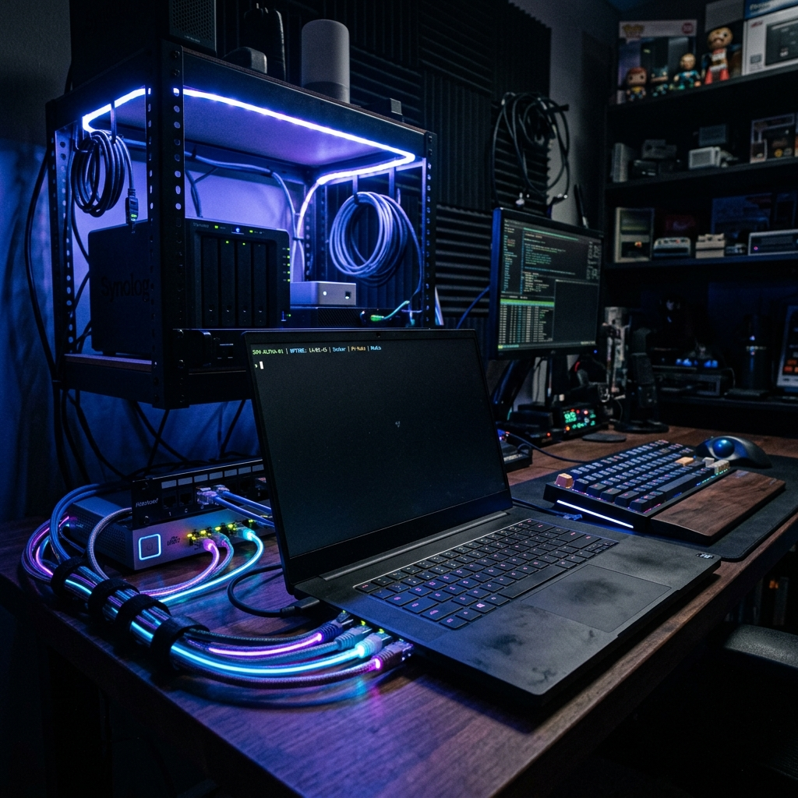

I frequently get asked by developers and tech enthusiasts if they can repurpose an old, dust-gathering laptop into a functional on-premises server. The answer? Absolutely. In fact, it's one of the best ways to build a homelab, run personal projects, or even support a small business without investing in expensive enterprise hardware.
Laptops come with built-in UPS (the battery!), they're extremely power-efficient, and they usually have more than enough computing power for most self-hosting needs. Here is my comprehensive guide to taking that old laptop and turning it into a robust, internet-accessible server.
High-Level Architecture
Before we dive into the commands, let's visualize what we are trying to build. We want traffic from the internet to securely reach your laptop sitting at home.
Step 1: Choose the Operating System
While you could run Windows, a Linux distribution is far superior for a headless server environment. I strongly recommend wiping the laptop and installing one of these:
- Ubuntu Server 24.04 LTS (My top pick)
- Debian 12
- Rocky Linux
Ubuntu Server is my go-to recommendation due to its extensive documentation, massive community support, and straightforward package management.
Step 2: Give the Laptop a Static IP
Servers need stable addresses. If your laptop's IP changes every time the router reboots, your port forwarding rules will break. Do not rely on DHCP.
You can configure a static IP via your router's interface (DHCP reservation) or directly within Ubuntu (using Netplan). I prefer doing it on the router to keep network management centralized.
# Example Configuration
Laptop IP: 192.168.1.100
Gateway: 192.168.1.1
DNS: 1.1.1.1, 8.8.8.8Step 3: Install a Web Server
You need software to handle HTTP/HTTPS requests. Popular choices include Nginx, Apache, and Caddy. For performance and reverse-proxy capabilities, Nginx is fantastic.
sudo apt update
sudo apt install nginxNavigate to http://192.168.1.100 on another device in your house, and you should be greeted by the classic "Welcome to nginx!" screen.
Step 4: Configure Firewall
Security is paramount. We only want to expose the necessary ports. Ubuntu's Uncomplicated Firewall (UFW) makes this easy:
sudo ufw allow 80 # HTTP
sudo ufw allow 443 # HTTPS
sudo ufw allow 22 # SSH
sudo ufw enableStep 5: Make It Reachable from the Internet
This is where the magic happens—bridging your local network to the world wide web.
Option A (Best): Public Static IP
If you can, ask your ISP for a Static Public IP. This guarantees your home network is always reachable at the same address (e.g., 203.25.xx.xx).
Option B: Dynamic Public IP
Most residential connections have dynamic IPs that change periodically. You can solve this using a Dynamic DNS (DDNS) service like DuckDNS, No-IP, or Cloudflare's DDNS scripts. Your router or a small script on your laptop will continuously ping the DDNS provider to update your current IP address behind a domain name (e.g., myserver.duckdns.org).
Step 6: Configure Port Forwarding
Log into your router and forward incoming web traffic to your laptop's internal IP address.
- External Port 80 → Internal Port 80 (IP 192.168.1.100)
- External Port 443 → Internal Port 443 (IP 192.168.1.100)
Step 7: Enable HTTPS and Domains
Don't serve traffic over plain HTTP. Buy a cheap domain name and point its A-record to your Public IP address. Then, secure it with a free SSL certificate from Let's Encrypt using Certbot.
sudo apt install certbot python3-certbot-nginx
sudo certbot --nginxStep 8: Reverse Proxying Multiple Apps
Once you start homelabbing, you won't stop at one app. You can use Nginx as a reverse proxy to route traffic based on subdomains to different applications running on different local ports.
Step 9: Containerize Everything with Docker
As an SRE, I hate installing dependencies directly on the host OS. Docker makes deployment, updates, and backups infinitely easier.
Adopt a clean folder structure for your persistent volumes, such as /srv/docker/.
Step 10: Security, Monitoring, and Backups
Running a server means you are responsible for keeping it alive and secure.
- Security: Disable root SSH login, switch to SSH key authentication entirely, and install
fail2banto block brute-force attempts. Enable automatic security updates. - Monitoring: Since observability is my bread and butter, I highly recommend spinning up a stack with Prometheus, Grafana, Node Exporter, and Loki. Monitor your CPU, memory, disk I/O, and SSL certificate expiry.
- Backups: Never rely entirely on an old laptop's hard drive. Automate backups (e.g., using cron jobs or Restic) to a NAS, external HDD, or cloud storage like AWS S3 or Backblaze B2.
The CGNAT Hurdle
If you've done everything right and it still doesn't work, you might be behind Carrier-Grade NAT (CGNAT). Many modern ISPs use CGNAT, meaning your router doesn't actually have a true public IP address, making port forwarding impossible.
If you are stuck behind CGNAT, you have modern alternatives:
- Cloudflare Tunnels: A secure, outbound-only tunnel that exposes your local apps to the internet without opening inbound ports on your router.
- VPS VPN: Rent a $5/month VPS and establish a Tailscale or WireGuard tunnel between your laptop and the VPS, then route internet traffic through the VPS.
A Production-Ready Architecture
Putting it all together, here is what a robust, modern homelab architecture looks like when powered by an old laptop.
Port 80 / 443] E --> F[Ubuntu Server Laptop
Docker + Docker Compose] F --> G[Nginx / Caddy] F --> H[Grafana] F --> I[Prometheus] G --> J[Website A] G --> K[Website B] J -.-> L[(PostgreSQL)] K -.-> L
Given my background in automation and observability, my personal recommendation is to combine Ubuntu Server + Docker Compose + Nginx + Cloudflare DNS. If your ISP is uncooperative, slap a Cloudflare Tunnel on it. This gives you a flexible, secure, and highly maintainable on-prem server—proving you don't need rack-mounted enterprise hardware to build something great.